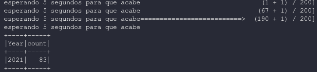
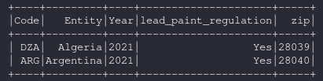

spark.readStream¶
Devuelve un dataframe streaming desde una fuente de datos.
Ejemplos:
Para los ejemplos el archivo csv base es: https://www.kaggle.com/kkhandekar/lead-poisioning?select=legal-controls-lead-paint.csv
El directorio de trabajo es el siguiente:
readStream / writeStream / format memory¶
from pyspark.sql import SparkSession
import pyspark.sql.functions as F
from pyspark.sql.types import *
import time
spark = SparkSession.builder.appName('structured_streaming').getOrCreate()
#Se tiene que definir un esquema porque es obligatorio para usar readSchema desde archivos csv
schema = StructType().add("Entity","string")\
.add("Code","string")\
.add("Year","string")\
.add("lead_paint_regulation","string")
#En esta parte del código readStream lee del directorio ./input/streaming y monitoriza cualquier cambio en los archivos
df = spark.readStream.schema(schema).csv("./input/streaming", quote='"', escape='"', sep=",", header=True)
df.printSchema()
df = df.groupBy("Year").count()
#El formato de escritura "memory" se utiliza para fines de depuración, se debe usar con poca cantidad de registros ya que el stream se escribe en memoria
query = df.writeStream.format("memory")\
.outputMode("complete")\
.queryName("aggregates")\
.start()
#Al ejecutar en local, para poder usar spark.sql necesitamos que writeStream procese los ficheros desde el stream,
#por lo tanto monitorizamos isDataAvailable del query para determinar si ha terminado de procesar
#- **Importante**: Este fragmento de código es importante ya que writeStream ejecuta de forma asincrona.
#Si no se pone este código select * from aggregates no devuelve nada
while(query.status["isDataAvailable"]):
time.sleep(5)
print("esperando 5 segundos para que acabe")
#Una vez que no hay mas datos ficheros a procesar procedemos a hacer un select y mostrarlos en pantalla para verificar los resultados
spark.sql("select * from aggregates").show()
Resultados
readStream / join / writeStream¶
Join entre un dataframe streaming y un dataframe estático. No hay ninguna diferencia con un join normal
from pyspark.sql import SparkSession
import pyspark.sql.functions as F
from pyspark.sql.types import *
import time
spark = SparkSession.builder.appName("structured streaming").getOrCreate()
schema = StructType().add("Entity","string")\
.add("Code","string")\
.add("Year","string")\
.add("lead_paint_regulation","string")
#lectura del directorio /input/streaming a un dataset de streaming
dfstream = spark.readStream.schema(schema).csv("./input/streaming", quote='"', escape='"', sep=",", header=True)
#crear un dataframe estatico
dfstatic = spark.createDataFrame([("DZA","28039"),("ARG","28040")],["code","zip"])
dfstatic.show()
#ambos datasets comparten el campo 'code'
dfjoin = dfstream.join(dfstatic, 'code')
query = dfjoin.writeStream.queryName("query_join").outputMode('append').format('memory').start()
#Se sigue usando el loop de espera
while(query.status["isDataAvailable"]):
time.sleep(5)
print("esperando 5 segundos para que acabe")
spark.sql("select * from query_join").show()
Resultados
